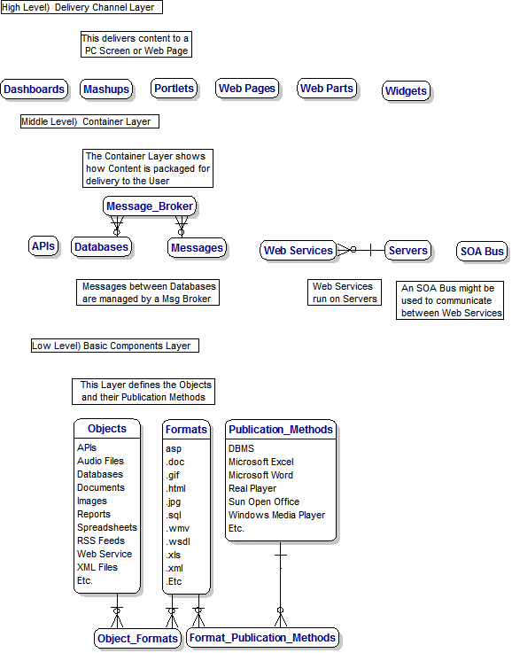

|
The purpose of this Data Architecture is to provide a framework for communication between interested parties regarding planning for the future,
specifically regarding data and information architectures and design alternatives.
Specific questions of interest include :-
1. How many layers should there be ?
2. What is the appropriate terminology to be used ?
There is some consideration of Application Architectures in the background, and there is therefore some overlap with the
Model-View-Controller (MVC) approach.
The Requirements for this Data Architecture are based on my view of the Future of Databases
and the Universal Information Architecture.
If you new to Databases, you will find my new Tutorial helpful to Understand the Database Schema.
This diagram is not strictly a Data Model but I have used a Data Modelling Tool called Dezign to produce the diagram.

Barry Williams
Principal Consultant
May 5th. 2009
Database Answers Ltd.
London, England
|
|